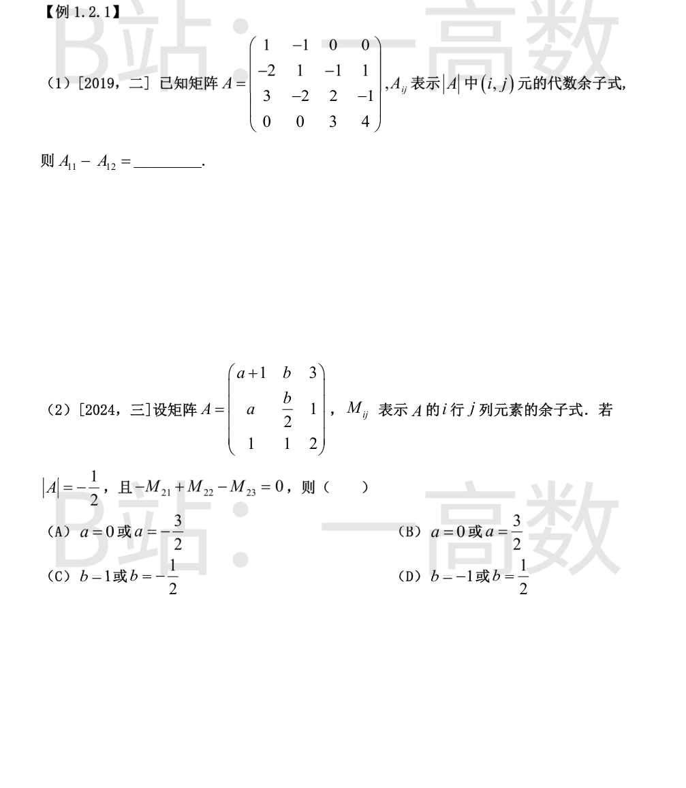
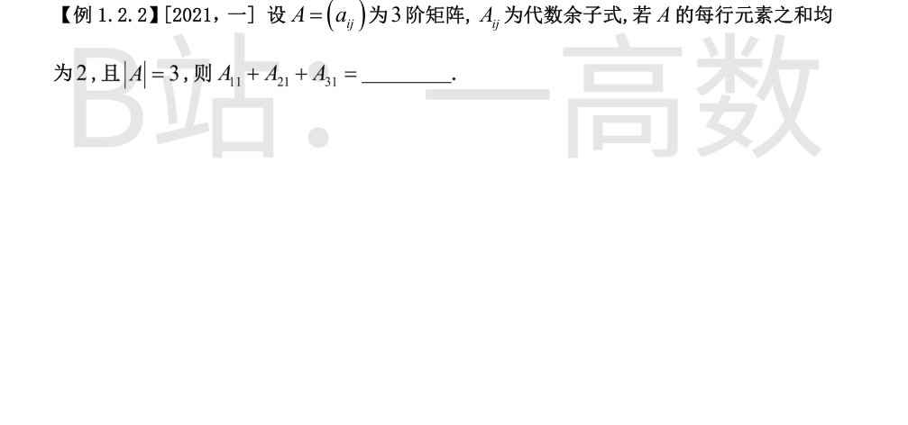

因 A 的第一行恰为 (1,-1,0,0)，按第一行展开
$$|A|=1\cdot A_{11}+(-1)\cdot A_{12}+0\cdot A_{13}+0\cdot A_{14}=A_{11}-A_{12},$$
故所求即为 |A|。用行变换计算：
$$|A|=\begin{vmatrix}1&-1&0&0\\-2&1&-1&1\\3&-2&2&-1\\0&0&3&4\end{vmatrix}\xrightarrow{\ r_2+2r_1,\ r_3-3r_1\ }\begin{vmatrix}1&-1&0&0\\0&-1&-1&1\\0&1&2&-1\\0&0&3&4\end{vmatrix}=\begin{vmatrix}-1&-1&1\\1&2&-1\\0&3&4\end{vmatrix}$$
$$=-1\cdot[2\cdot4-(-1)\cdot3]+1\cdot(1\cdot4-0)+1\cdot(1\cdot3-2\cdot0)=-11+4+3=-4.$$
所以 A_{11}-A_{12}=-4。
由 A_{2j}=(-1)^{2+j}M_{2j}，得 -M_{21}+M_{22}-M_{23}=A_{21}+A_{22}+A_{23}，它等于把 A 的第二行换成 (1,1,1) 后的行列式：
$$D_1=\begin{vmatrix}a+1&b&3\\1&1&1\\1&1&2\end{vmatrix}=-(2b-3)+(2a-1)-(a+1-b)=a+1-b,$$
由 D_1=0 得 b=a+1。再按第一行展开计算 |A|：
$$|A|=\begin{vmatrix}a+1&b&3\\a&\tfrac{b}{2}&1\\1&1&2\end{vmatrix}=(a+1)\Big(\tfrac{b}{2}\cdot2-1\Big)-b(2a-1)+3\Big(a-\tfrac{b}{2}\Big)=-ab+2a+\tfrac{b}{2}-1.$$
由 |A|=-\tfrac12 得 -2ab+4a+b=1；代入 b=a+1：
$$-2a(a+1)+4a+(a+1)=1\ \Rightarrow\ -2a^2+3a=0\ \Rightarrow\ a=0\ \text{或}\ a=\tfrac32,$$
此时 b=a+1 随之确定。故选 (B)。

每行元素之和均为 2，即
$$A\begin{pmatrix}1\\1\\1\end{pmatrix}=2\begin{pmatrix}1\\1\\1\end{pmatrix}.$$
两边左乘 A^{*}：A^{*}A(1,1,1)^{T}=|A|E(1,1,1)^{T}=3(1,1,1)^{T}=2A^{*}(1,1,1)^{T}，故
$$A^{*}\begin{pmatrix}1\\1\\1\end{pmatrix}=\tfrac{3}{2}\begin{pmatrix}1\\1\\1\end{pmatrix}.$$
而 A^{*} 的第一列为 (A_{11},A_{21},A_{31})^{T}，其第一个分量即 A_{11}+A_{21}+A_{31}=\tfrac32。